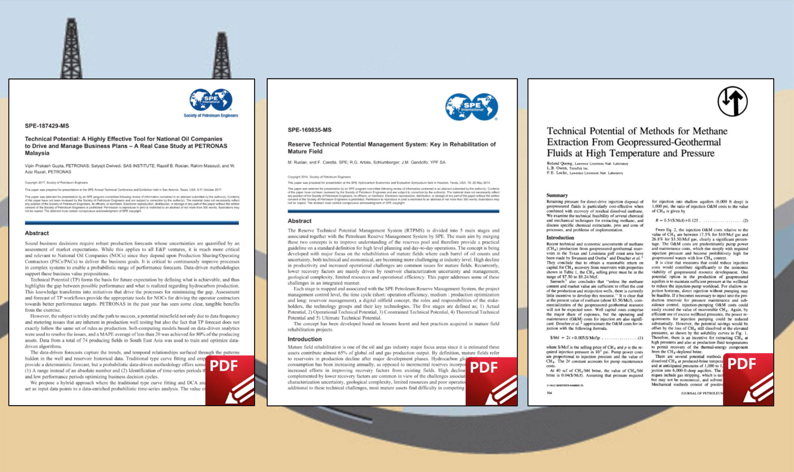
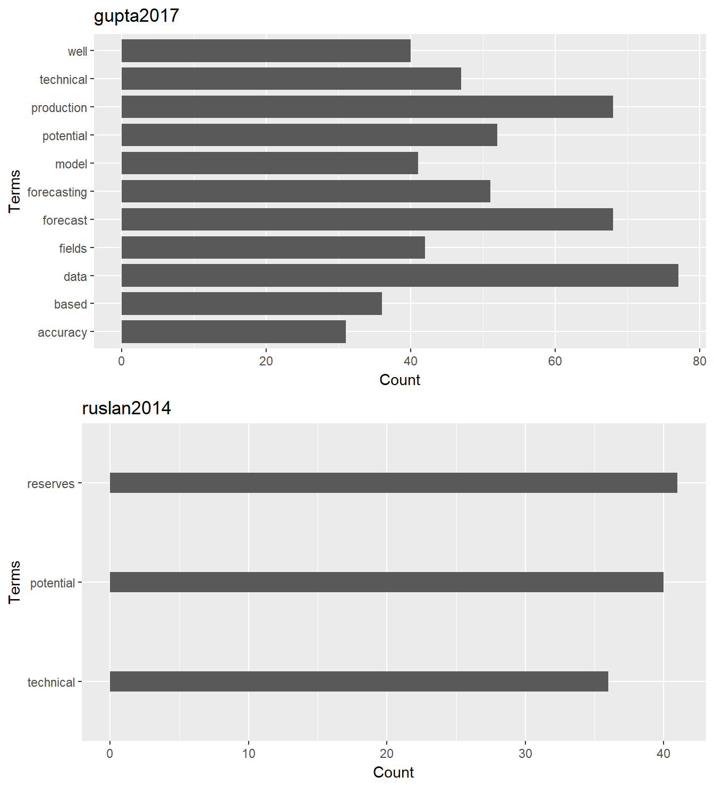

Last week I was talking with a colleague about some projects that could be deployed using R, and then the topic of well technical potential came up. I got hooked by the subject, and then decided to explore it a little bit more.
What is not better if going to OnePetro and search for papers on technical potential. I did and found 132 papers matching the term. Well, I was not going to purchase those 132 papers, you know. I had to reduce that number to an essential minimum. How?
That is the topic of today’s article. And for that purpose, we will be using text mining.
I will be using the following ingredients for this recipe. :)
All of these tools are open source and free. Never has been more true saying “free ride” for studying, learning and using state-of-the-art software than today. You will just have to invest some of your time.
Let’s find out how many papers contain the term technical potential. Here is the code in R:
library(petro.One)
my_url <- make_search_url(query = "technical potential",
how = "all")
num_papers <- get_papers_count(my_url)
# [1] 132What the package petro.One does is connecting with OnePetro and submit the text technical potential to the website, specifying that we want papers that only have those two words together with the parameter how. We could read the number of papers from the object num_papers.
We read the titles of the papers, and the rest of the metadata, and put that in a dataframe df. So, we get 132 papers as it is shown below.
df <- read_multidoc(my_url)
df# A tibble: 132 x 6
title_data
<chr>
1 Reserve Technical Potential Management System: Key in Rehabilitation of Mat
2 Technical Potential: A Highly Effective Tool for National Oil Companies to
3 Using Business Intelligent Tool to Gain Insight into Well Integrity, Survei
4 Managed Pressure Drilling With Solids-Free Drilling Fluid Provides Cost-Eff
5 Optimizing Number of Fractures in Horizontal Well
6 Intelligent Automation of Mature Field Development Process: Case Study From
7 Staying Ahead through Built-in Automated Approach for Well Modelling in Gas
8 The Models of Sea Waves Energy Converters
9 The First Subsea Completion by an Operator in KN Field, Offshore Malaysia
10 Surfactant Flooding: Technical and Economical Conditions To Succeed
# ... with 122 more rows, and 5 more variables: paper_id <chr>,
# source <chr>, type <chr>, year <int>, author1_data <chr>We assume that the papers with stronger technical potential content are those that have in the title those words. We will look at papers in the title.
df$title <- tolower(df$title_data)
# df[grep("technical potential", df$title), c("title_data", "paper_id")]
df[grep("technical potential", df$title), ]# A tibble: 3 x 7
title_data
<chr>
1 Reserve Technical Potential Management System: Key in Rehabilitation of Mat
2 Technical Potential: A Highly Effective Tool for National Oil Companies to
3 Technical Potential of Methods for Methane Extraction From Geopressured-Geo
# ... with 6 more variables: paper_id <chr>, source <chr>, type <chr>,
# year <int>, author1_data <chr>, title <chr>There are 3 papers that have technical potential in their title.
At this point, we could do two things:
technical potential in the titleWe will do first a text mining of the papers that gave a match on the title.
df. There are 3 papers that match that pattern.df[grep("technical potential", df$title), c("source", "paper_id")]# A tibble: 3 x 2
source paper_id
<chr> <chr>
1 SPE 169835-MS
2 SPE 187429-MS
3 SPE 9469-PA These three papers are our best candidates, from the 132 papers that matched our initial query. Next is finding which of the three papers is the one richer in technical potential content and focus our attention to it.
What we will do is reading inside the papers, the PDF files.
Once the papers have been downloaded, we will verify that they are in our working directory:
files <- list.files(pattern = ".pdf$")
files[1] "gupta2017.pdf" "quong1982.pdf" "ruslan2014.pdf"That gives us three PDF files. Pay attention to the object files. We will use it to create the mining corpus in a moment.
The following operation is reading the papers that are in PDF format. R has a way to read PDF files through the function readPDF of the package tm.
library(tm)
Rpdf <- readPDF(control = list(text = "-layout"))
papers <- Corpus(URISource(files),
readerControl = list(reader = Rpdf))
papers <- tm_map(papers, content_transformer(function(x) iconv(enc2utf8(x),
sub = "byte")))
inspect(papers)
# one-word terms in gupta2017 paper
papers.tdm <- TermDocumentMatrix(papers,
control = list(removePunctuation = TRUE,
stopwords = TRUE,
removeNumbers = TRUE,
tolower = TRUE
#stemming = TRUE
))
inspect(papers.tdm)<<VCorpus>>
Metadata: corpus specific: 0, document level (indexed): 0
Content: documents: 3
[[1]]
<<PlainTextDocument>>
Metadata: 7
Content: chars: 58402
[[2]]
<<PlainTextDocument>>
Metadata: 7
Content: chars: 50389
[[3]]
<<PlainTextDocument>>
Metadata: 7
Content: chars: 27550
<<TermDocumentMatrix (terms: 3424, documents: 3)>>
Non-/sparse entries: 4141/6131
Sparsity : 60%
Maximal term length: 48
Weighting : term frequency (tf)
Sample :
Docs
Terms gupta2017.pdf quong1982.pdf ruslan2014.pdf
based 36 3 7
data 77 10 8
field 27 0 17
fields 42 0 5
forecast 68 0 0
forecasting 51 0 0
potential 52 7 40
production 68 7 23
technical 47 4 36
well 40 4 10The papers object is the corpus. The object papers.tdm is the term document matrix.
The table at the bottom is the term document matrix. A matrix where the rows are the terms and the columns are the counts of those terms for each paper.
Observe that each of the PDF files has an identifier like this [[1]], [[2]] and [[3]]. Take a look at the number of characters each document contains.
Now, let’s get the number of words or terms
# how many terms per paper
sapply(papers, function(x) length(termFreq(x)) ) gupta2017.pdf quong1982.pdf ruslan2014.pdf
2274 1882 1207 Now, a summary table of our initial findings:
Docs gupta2017.pdf quong1982.pdf ruslan2014.pdf
Num Chars 58230 50343 27492
Terms 2274 1878 1207We can see that the document with more content is gupta2017, the second quong1982, and the third, ruslan2014. But we will find something interesting later.
Now that the papers corpus has been converted to a term document matrix, we could continue with finding the most frequent terms:
# findFreqTerms(papers.tdm, lowfreq = 50, highfreq = Inf)
findMostFreqTerms(papers.tdm)$gupta2017.pdf
data forecast production potential forecasting technical
77 68 68 52 51 47
$quong1982.pdf
pressure solubility brine gas injection freon
38 32 31 27 25 21
$ruslan2014.pdf
reserves potential technical production will field
41 40 36 23 20 17 What is happening here is that even though “technical potential” is in the title of quong1982, the paper is not strong in technical potential, per se. The other two papers are stronger.
Observe the frequency of the terms. What is happening here is that even though “technical potential” is found in the title of the paper quong1982, the paper is not rich in technical potential terms. The other two papers are stronger. We will put aside quong1982 and analyze gupta2017 and ruslan2014.
Just to be sure, one more time let’s find the score of all the papers given the terms “technical” and “potential”.
tm_term_score(papers.tdm, "technical")
tm_term_score(papers.tdm, "potential") gupta2017.pdf quong1982.pdf ruslan2014.pdf
47 4 36
gupta2017.pdf quong1982.pdf ruslan2014.pdf
52 7 40 Well, that confirms our initial analysis; quong1982 is not the best candidate paper for studying “technical potential”.
What we do here is building a dataframe of terms vs. frequency at which each occur.
library(tibble)
# frequency analysis of gupta2017
theFile <- "gupta2017.pdf"
paper <- Corpus(URISource(theFile),
readerControl = list(reader = Rpdf))
paper <- tm_map(paper, content_transformer(function(x) iconv(enc2utf8(x),
sub = "byte")))
paper.tdm <- TermDocumentMatrix(paper,
control = list(removePunctuation = TRUE,
stopwords = TRUE,
removeNumbers = TRUE,
tolower = TRUE
#stemming = TRUE
))
findFreqTerms(paper.tdm, lowfreq = 50, highfreq = Inf)
findMostFreqTerms(paper.tdm)
tdm.matrix <- as.matrix(paper.tdm)
tdm.rs <- sort(rowSums(tdm.matrix), decreasing = TRUE)
tdm.df1 <- tibble(word = names(tdm.rs), freq = tdm.rs)
tdm.df1[1] "data" "forecast" "forecasting" "potential" "production"
$gupta2017.pdf
data forecast production potential forecasting technical
77 68 68 52 51 47
# A tibble: 1,823 x 2
word freq
<chr> <dbl>
1 data 77
2 forecast 68
3 production 68
4 potential 52
5 forecasting 51
6 technical 47
7 fields 42
8 model 41
9 well 40
10 based 36
# ... with 1,813 more rowsNow, for the second paper:
# frequency analysis of ruslan2014
theFile <- "ruslan2014.pdf"
paper <- Corpus(URISource(theFile),
readerControl = list(reader = Rpdf))
paper <- tm_map(paper, content_transformer(function(x) iconv(enc2utf8(x),
sub = "byte")))
paper.tdm <- TermDocumentMatrix(paper,
control = list(removePunctuation = TRUE,
stopwords = TRUE,
tolower = TRUE,
removeNumbers = TRUE
#stemming = TRUE
))
findFreqTerms(paper.tdm, lowfreq = 50, highfreq = Inf)
findMostFreqTerms(paper.tdm)
tdm.matrix <- as.matrix(paper.tdm)
tdm.rs <- sort(rowSums(tdm.matrix), decreasing = TRUE)
tdm.df2 <- tibble(word = names(tdm.rs), freq = tdm.rs)
tdm.df2character(0)
$ruslan2014.pdf
reserves potential technical production will field
41 40 36 23 20 17
# A tibble: 999 x 2
word freq
<chr> <dbl>
1 reserves 41
2 potential 40
3 technical 36
4 production 23
5 will 20
6 field 17
7 mature 16
8 activities 15
9 management 15
10 resources 15
# ... with 989 more rowsWe can see some differences between the two: such as the total number of terms or words, the frequency for each term, and that the terms and frequency differ in both documents.
To finish, let’s plot terms vs frequency for both papers:
library(ggplot2)
p1 <- ggplot(subset(tdm.df1, freq > 30), aes(x=word, y=freq)) +
geom_bar(stat = "identity", width = 0.8) +
xlab("Terms") + ylab("Count") + ggtitle("gupta2017") +
coord_flip()
p2 <- ggplot(subset(tdm.df2, freq > 30), aes(x=reorder(word, freq), y=freq)) +
geom_bar(stat = "identity", width = 0.2) +
xlab("Terms") + ylab("Count") + ggtitle("ruslan2014") +
coord_flip()
require("gridExtra")
grid.arrange(arrangeGrob(p1, p2))
We rapidly determined, in our study for the term “technical potential”, which papers are the best candidates.
We used text mining, composed a document corpus and a term document matrix, to take that decision, and narrow down from 132 to 3 papers that search and the acquisition of those papers.
From the three selected papers, we were able to put aside one because the other two papers were even richer in the content we were looking for.
This doesn’t mean that we should discard reading the other 130 papers; but doing a deeper analysis of all the papers requires purchasing and downloading all of them. If this option is viable, we may find that other papers may contain interesting content for the subject of our research. In the case of our study for reasons of time and budget we came up rapidly to only those two papers.